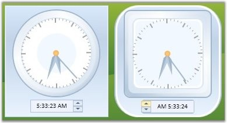
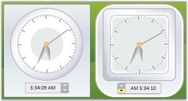

You can apply different visual styles to the Clock control to give an appealing appearance using the VisualStyle property.
|
Property |
Description |
|
VisualStyle |
Sets the visual style for the Clock control. The options provided are as follows.
· Blend · Office2003 · Office2007Blue · Office2007Black · Office2007Silver · ShinyBlue · ShinyRed · SyncOrange · VS2010 · Metro |
To the set the visual style for the Clock control use the following code.
|
[C#]
//For Default Style SkinStorage.SetVisualStyle(ctlClock, "Default");
//For Blend Style SkinStorage.SetVisualStyle(ctlClock, "Blend");
//For Office2007Silver SkinStorage.SetVisualStyle(ctlClock, "Office2007Silver");
//For Office2007Blue SkinStorage.SetVisualStyle(ctlClock, "Office2007Blue");
//For Office2007Black SkinStorage.SetVisualStyle(ctlClock, "Office2007Black");
//For Office2003 SkinStorage.SetVisualStyle(ctlClock, "Office2003"); |

Figure 144: Clock Control with "Office2007Blue" Visual Style

Figure 145: Clock Control with "Office2007Silver" Visual Style